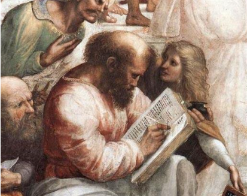

Pitágoras y su Aporte a la Humanidad
Pitágoras y la Poesía
Poesía

Pitágoras y la Poesía
Pitágoras dejó a la posteridad un conjunto de versos conocidos como los Versos Dorados, que son una colección de dichos morales. Son 71 estrofas en hexámetro dactílico, que representan la síntesis de las enseñanzas impartidas en su academia. Estos versos fueron usados durante mucho tiempo por filósofos neoplatónicos, como parte de su instrucción moral. En este video se pueden oír narrados los Versos de Oro
- Actividad No. 4 Preguntas para Lectura Activa
-
- ¿Qué son los Versos de Oro?
- ¿Qué tipo de instrucción contienen?
Obra publicada con Licencia Creative Commons Reconocimiento Compartir igual 4.0